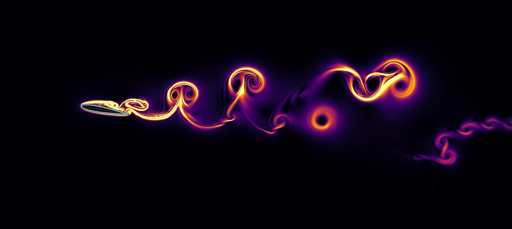
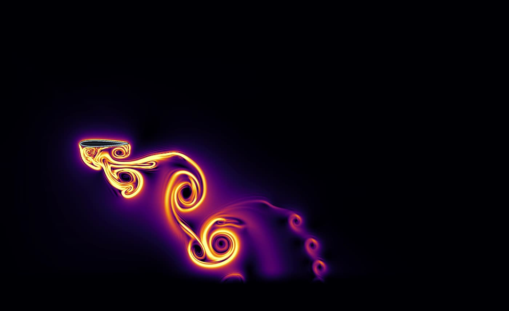
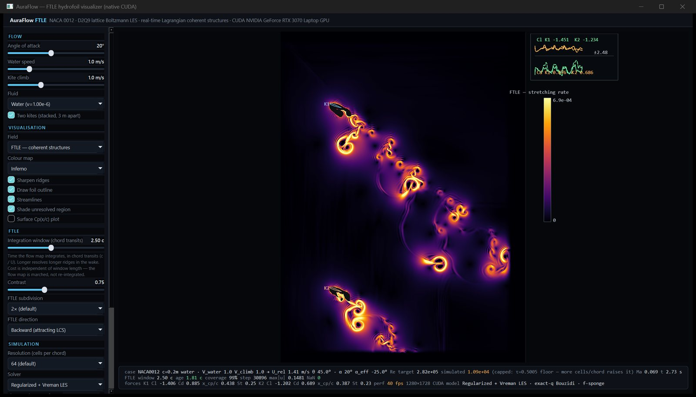

Own GPU solver, 2026
Real-time hydrofoil wakes with lattice Boltzmann and FTLE
A native desktop app that simulates water flowing past a NACA 0012 hydrofoil and draws, frame by frame, where the flow separates and rolls up into vortices. It grew out of my thesis topic, underwater kites for tidal energy, where two foils fly one above the other.
Why FTLE instead of smoke
Smoke tracers show where particles went. The finite-time Lyapunov exponent shows where the flow pulls neighbouring particles apart, so separation bubbles, shear layers and vortices appear as sharp curves instead of a diffuse cloud. The textbook method re-integrates every trajectory for every frame, which is why earlier tools offered a "calculate" button. This app instead advances the backward flow map with one semi-Lagrangian step per frame, so the field is live and its cost does not grow with the integration window.


How it works
- Solver. D2Q9 lattice Boltzmann with regularised collision and a Vreman LES subgrid model, exact-distance Bouzidi walls on the foil, and sponge layers that absorb outgoing waves.
- Forces. Lift and drag by momentum exchange, consistent with the Bouzidi wall, plotted live alongside the Strouhal number.
- Honest numbers. The on-screen readout gives the target Reynolds number of the real kite and the lower one the grid can actually resolve, instead of implying the two are the same.
- Checked against a CPU oracle. A double-precision CPU reference for the lattice-Boltzmann core and the FTLE, plus Couette, Poiseuille and Taylor–Green tests.
- Speed. One lattice step at 480 × 240 takes 0.14 ms on a laptop RTX 3070, about 800 million lattice updates per second.
- Output. H.264 recording, PNG and VTK export with JSON metadata, and saved presets.
Validation at Re 1000
An automated polar sweep from 0° to 12°, compared with Kurtulus (2015). Drag at zero incidence is 0.125 against 0.12 in the literature. Alternating shedding starts at 8° (literature: 7–8°) with a Strouhal number of 0.878 against 0.88.
Two kites, one above the other
In the tidal-kite concept two foils fly stacked on one tether system. The app places two NACA 0012 kites 3 m apart (15 chords) and shows how the upper kite's wake reaches the lower one while both climb.

Lessons
- A frozen reference pays for itself. Porting a browser prototype to CUDA was tractable because the core kernels could be compared with a CPU version; the gaps in that oracle are the next thing on the list.
- Resolution limits belong on screen. A 64-cells-per-chord grid cannot reach a full-scale Reynolds number, and saying so up front avoids over-reading the pictures.